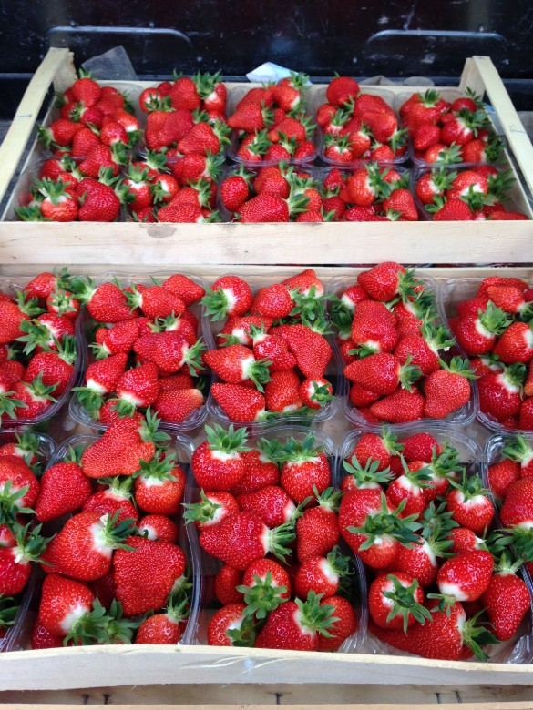
Les fraises
Barquettes remplies le jour même, posées en cagettes à l'entrée du magasin. Au printemps et au début de l'été.mois exacts
Producteurs à Poilcourt-Sydney. Nos légumes partent du champ au magasin, et on y ajoute ce que font nos confrères du coin : viande, laitages et épicerie.
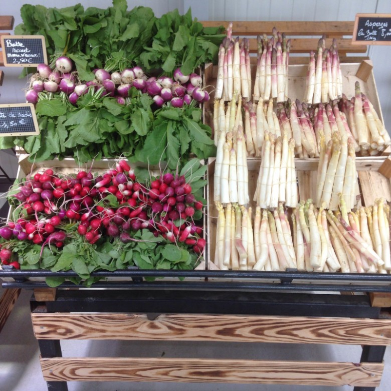
Poilcourt-Sydney et Brienne-sur-Aisne, à un quart d'heure l'un de l'autre.
Les deux productions de la maison, en saison.dates de saison
Viande, laitages et épicerie de producteurs locaux.
« Maraîchers depuis plusieurs années, nous vendons nos légumes frais et les produits de confrères locaux : viande, laitages et épicerie. »
Les tunnels sont à quelques centaines de mètres du magasin. Les asperges, les fraises, les tomates, les salades : tout est planté, récolté et vendu sur place.
Ce qu'on ne produit pas, on va le chercher chez les voisins plutôt qu'en centrale. C'est ce qui remplit le reste des rayons.
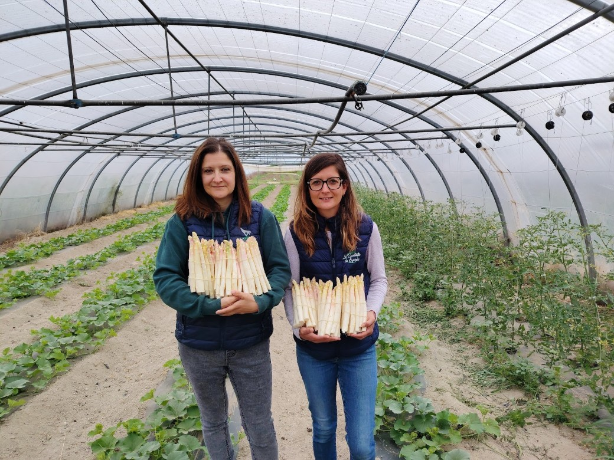
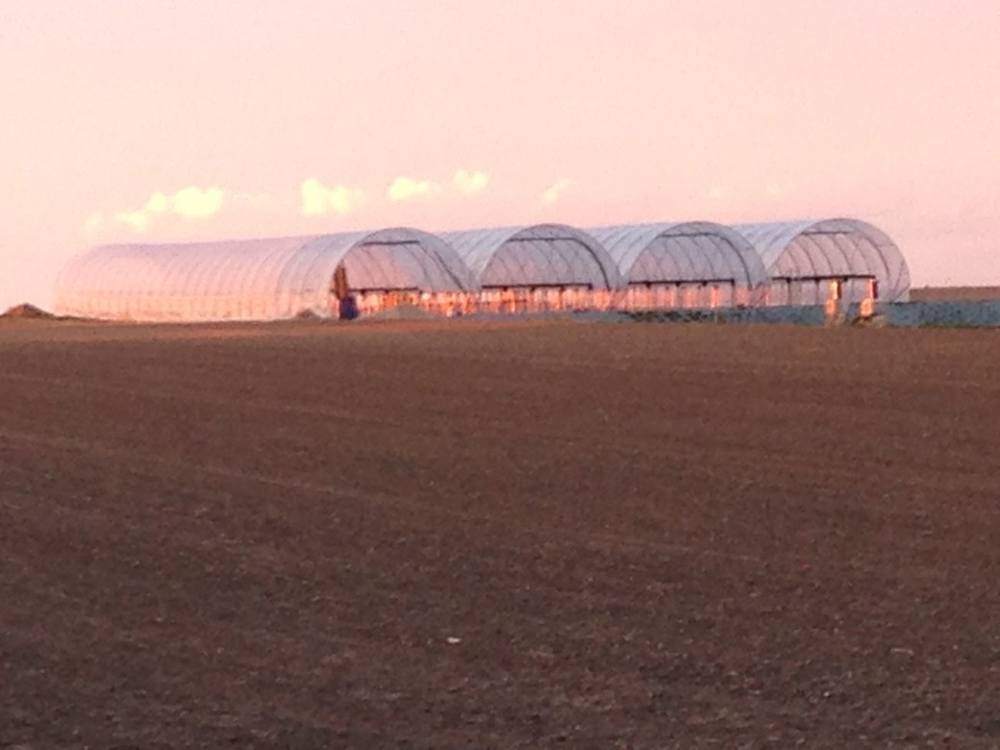
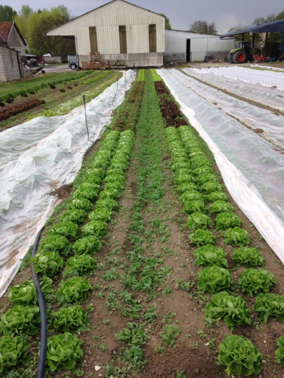
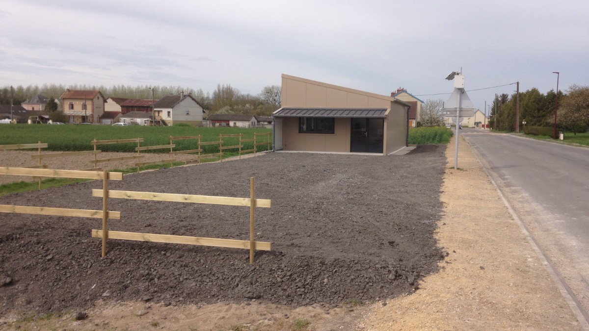
La liste change toutes les trois semaines. Voici ce qui revient d'une saison à l'autre.

Barquettes remplies le jour même, posées en cagettes à l'entrée du magasin. Au printemps et au début de l'été.mois exacts
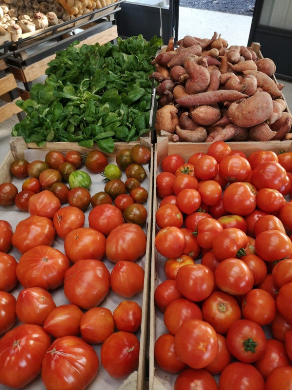
Tomates rondes, cœur de bœuf et noires, mâche, patates douces. Les poivrons, aubergines et courgettes suivent.
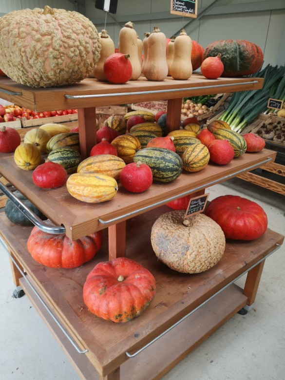
Potimarrons, butternuts, courges décoratives et potirons, sur les présentoirs en bois du magasin.
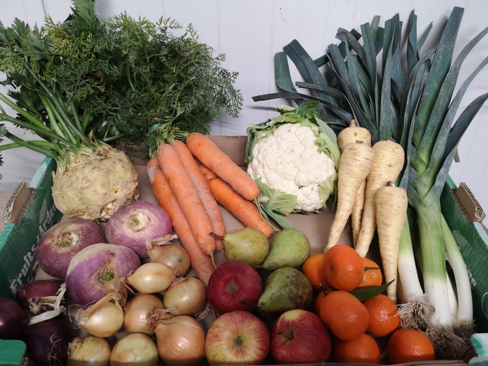
Céleri-rave, carottes, chou-fleur, panais, poireaux, navets, oignons, pommes et poires.
Et au fil de l'année : radis, navets boule d'or, blettes, rhubarbe, romanesco, radis noir, salades.liste à compléter avec vous
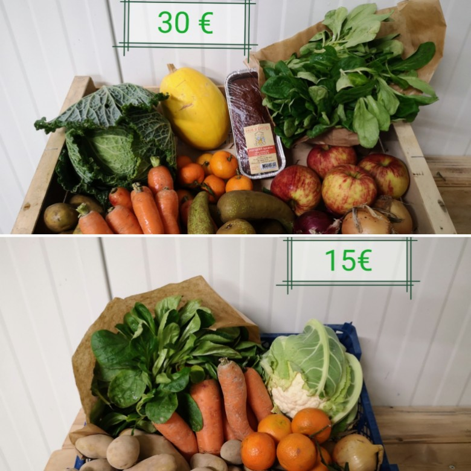
Deux formats préparés avec ce qu'il y a de meilleur ce jour-là : un petit et un grand.prix à confirmer
Le petit : mâche, carottes, pommes de terre, chou, clémentines.
Le grand : la même chose en plus large, avec des pommes, des poires, un chou vert et une terrine de la maison voisine.
On peut aussi venir avec sa liste et composer soi-même. Pour une commande, un coup de fil la veille suffit.commande possible ?
Un à la ferme, à Poilcourt-Sydney. Un second à Brienne-sur-Aisne, dans la zone de la Croixette.
Le dépliant indique encore « 1 avenue de Bourgoin, Sault-lès-Rethel » pour ce magasin.adresse à trancher
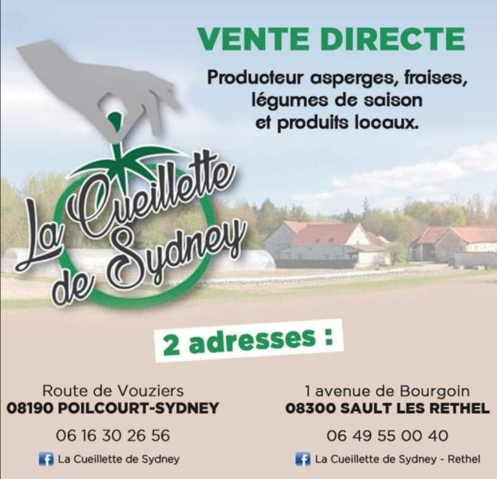
Pour une commande, une question sur ce qu'il y a en ce moment, ou un panier à préparer.